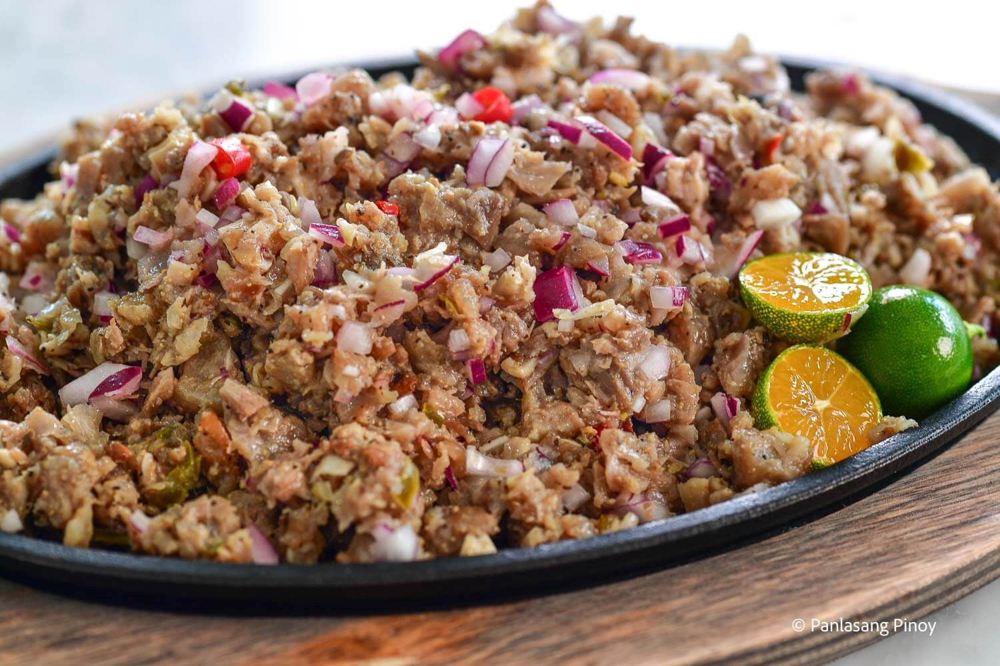

Home
Pork Sisig

Pork sisig is a popular Filipino dish. It can be considered as a main dish or an appetizer. The composition of
this dish is mainly of pig’s parts such as minced pork meat, ears, and face. Chicken liver, onions, and chili
peppers are also added.
Ingredients
- 1 lb pig ears
- 1 lb. pig snout
- 1 lb pork belly
- 2 pieces onions minced
- 3 pieces bay leaves
- 2 teaspoons salt
- 4 thumbs ginger crushed
- 1 quarts water
Sisig Dressing
- ½ cup Lady’s Choice Mayonnaise
- 2 tablespoons sukang iloko
- ¼ teaspoon ground black pepper
- 1 teaspoon salt
- 1 teaspoon sugar
- ¼ cup liver spread
- 2 limes
- 1 tablespoon Knorr Liquid Seasoning
Instructions
- Combine pig ears, snout, pork belly, ginger, bay leaves, 2 teaspoons salt, and 1 quart of water in a cooking
pot. Boil for 1 hour. Remove from the pot and drain the water.
- Heat-up your grill. Start grilling the pig parts for around 5 minutes per side. Remove from the grill
afterwards and let it cool down.
- Make the dressing by combining all the dressing ingredients. Mix well.
- Chop the grilled pig parts into small pieces. In a large mixing bowl, combine the chopped pork with onion
and the dressing mixture. Toss until all the ingredients are well blended.
- Transfer to a serving plate. Serve with your favorite drink. Share and enjoy!